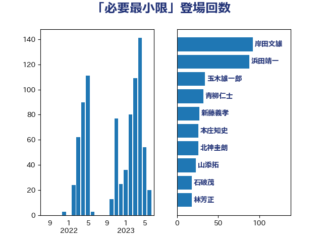

単語「必要最小限」

| 岸田文雄 | 自由民主党 | 92 回 |
| 浜田靖一 | 自由民主党 | 88 回 |
| 玉木雄一郎 | 国民民主党 | 34 回 |
| 青柳仁士 | 日本維新の会 | 32 回 |
| 新藤義孝 | 自由民主党 | 27 回 |
| 本庄知史 | 立憲民主党 | 26 回 |
| 北神圭朗 | 無所属 | 26 回 |
| 山添拓 | 日本共産党 | 23 回 |
| 石破茂 | 自由民主党 | 18 回 |
| 林芳正 | 自由民主党 | 18 回 |
| 宮本徹 | 日本共産党 | 15 回 |
| 緒方林太郎 | 無所属 | 14 回 |
| 奥野総一郎 | 立憲民主党 | 12 回 |
| 浜地雅一 | 公明党 | 11 回 |
| 加藤勝信 | 自由民主党 | 11 回 |
| 篠原豪 | 立憲民主党 | 10 回 |
| 三木圭恵 | 日本維新の会 | 9 回 |
| 後藤茂之 | 自由民主党 | 8 回 |
| 井野俊郎 | 自由民主党 | 8 回 |
| 足立康史 | 日本維新の会 | 7 回 |
| 穀田恵二 | 日本共産党 | 7 回 |
| 音喜多駿 | 日本維新の会 | 5 回 |
| 鈴木俊一 | 自由民主党 | 5 回 |
| 泉健太 | 立憲民主党 | 5 回 |
| 櫛渕万里 | れいわ新選組 | 5 回 |
| 木村次郎 | 自由民主党 | 5 回 |
| 岩谷良平 | 日本維新の会 | 5 回 |
| 小西洋之 | 立憲民主党 | 5 回 |
| 小林鷹之 | 自由民主党 | 5 回 |
| 北側一雄 | 公明党 | 5 回 |
| 齋藤健 | 自由民主党 | 4 回 |
| 長妻昭 | 立憲民主党 | 4 回 |
| 米山隆一 | 立憲民主党 | 4 回 |
| 柴田巧 | 日本維新の会 | 4 回 |
| 松野博一 | 自由民主党 | 4 回 |
| 本村伸子 | 日本共産党 | 4 回 |
| 井上哲士 | 日本共産党 | 4 回 |
| 鬼木誠 | 立憲民主党 | 3 回 |
| 馬場伸幸 | 日本維新の会 | 3 回 |
| 金子恭之 | 自由民主党 | 3 回 |
| 稲田朋美 | 自由民主党 | 3 回 |
| 石川博崇 | 公明党 | 3 回 |
| 熊田裕通 | 自由民主党 | 3 回 |
| 松本剛明 | 自由民主党 | 3 回 |
| 山下貴司 | 自由民主党 | 3 回 |
| 吉田宣弘 | 公明党 | 3 回 |
| 中川正春 | 立憲民主党 | 3 回 |
| 階猛 | 立憲民主党 | 2 回 |
| 金子道仁 | 日本維新の会 | 2 回 |
| 辻元清美 | 立憲民主党 | 2 回 |
| 羽田次郎 | 立憲民主党 | 2 回 |
| 福山哲郎 | 立憲民主党 | 2 回 |
| 畦元将吾 | 自由民主党 | 2 回 |
| 田島麻衣子 | 立憲民主党 | 2 回 |
| 浅田均 | 日本維新の会 | 2 回 |
| 河西宏一 | 公明党 | 2 回 |
| 江田憲司 | 立憲民主党 | 2 回 |
| 枝野幸男 | 立憲民主党 | 2 回 |
| 新垣邦男 | 立憲民主党 | 2 回 |
| 志位和夫 | 日本共産党 | 2 回 |
| 川田龍平 | 立憲民主党 | 2 回 |
| 岡田克也 | 立憲民主党 | 2 回 |
| 宮口治子 | 立憲民主党 | 2 回 |
| 堀井巌 | 自由民主党 | 2 回 |
| 高木かおり | 日本維新の会 | 1 回 |
| 高市早苗 | 自由民主党 | 1 回 |
| 阿部司 | 日本維新の会 | 1 回 |
| 金村龍那 | 日本維新の会 | 1 回 |
| 金城泰邦 | 公明党 | 1 回 |
| 野田聖子 | 自由民主党 | 1 回 |
| 野田佳彦 | 立憲民主党 | 1 回 |
| 赤嶺政賢 | 日本共産党 | 1 回 |
| 福島みずほ | 社会民主党 | 1 回 |
| 石川大我 | 立憲民主党 | 1 回 |
| 田村智子 | 日本共産党 | 1 回 |
| 玄葉光一郎 | 立憲民主党 | 1 回 |
| 猪瀬直樹 | 日本維新の会 | 1 回 |
| 片山さつき | 自由民主党 | 1 回 |
| 浅野哲 | 国民民主党 | 1 回 |
| 森田俊和 | 立憲民主党 | 1 回 |
| 梅村聡 | 日本維新の会 | 1 回 |
| 梅村みずほ | 日本維新の会 | 1 回 |
| 本田顕子 | 自由民主党 | 1 回 |
| 打越さく良 | 立憲民主党 | 1 回 |
| 徳永エリ | 立憲民主党 | 1 回 |
| 後藤祐一 | 立憲民主党 | 1 回 |
| 岩屋毅 | 自由民主党 | 1 回 |
| 山際大志郎 | 自由民主党 | 1 回 |
| 山谷えり子 | 自由民主党 | 1 回 |
| 山田勝彦 | 立憲民主党 | 1 回 |
| 山本香苗 | 公明党 | 1 回 |
| 山崎誠 | 立憲民主党 | 1 回 |
| 山岸一生 | 立憲民主党 | 1 回 |
| 小沼巧 | 立憲民主党 | 1 回 |
| 宮本岳志 | 日本共産党 | 1 回 |
| 太栄志 | 立憲民主党 | 1 回 |
| 大石あきこ | れいわ新選組 | 1 回 |
| 大岡敏孝 | 自由民主党 | 1 回 |
| 塩田博昭 | 公明党 | 1 回 |
| 國重徹 | 公明党 | 1 回 |
| 吉良よし子 | 日本共産党 | 1 回 |
| 務台俊介 | 自由民主党 | 1 回 |
| 前原誠司 | 国民民主党 | 1 回 |
| 佐々木さやか | 公明党 | 1 回 |
| 伊藤岳 | 日本共産党 | 1 回 |
| 伊波洋一 | 無所属 | 1 回 |
| 中谷一馬 | 立憲民主党 | 1 回 |
| 中島克仁 | 立憲民主党 | 1 回 |
| 一谷勇一郎 | 日本維新の会 | 1 回 |